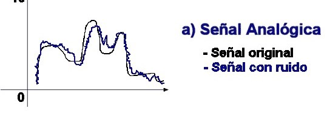
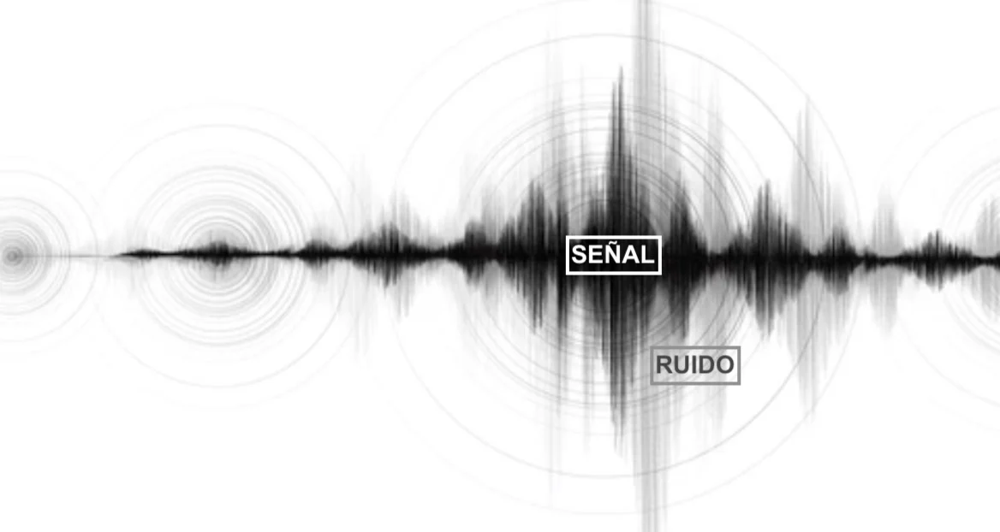

Señales Analógicas
Las señales analógicas son representaciones de información que varían continuamente en el tiempo y en amplitud. Estas señales se utilizan en una amplia gama de aplicaciones, como audio, video, comunicaciones y control de sistemas.
Las señales analógicas pueden ser representadas por diferentes componentes y tomar diversas formas de onda, incluidas las ondas sinusoidales, cuadradas, triangulares y de pulso. Estas formas de onda tienen propiedades únicas que las hacen adecuadas para diferentes tipos de aplicaciones.
A continuación, se muestran algunas formas de onda comunes:
- Onda Sinusoidal: Representa una variación suave y continua en el tiempo.
- Onda Cuadrada: Tiene una transición rápida entre dos niveles de amplitud fija.
- Onda Triangular: Caracterizada por una variación lineal entre dos niveles de amplitud fija.
- Onda de Pulso: Se representa por impulsos de corta duración con una amplitud constante.
A continuación, se presentan imágenes ilustrativas de estas formas de onda:
Introducción a la Interferencia y el Ruido en Señales Analógicas
Las señales analógicas son omnipresentes en nuestro mundo moderno, utilizadas en una amplia gama de aplicaciones que van desde la comunicación hasta la electrónica de potencia. Sin embargo, dos fenómenos inevitables que afectan a estas señales son la interferencia y el ruido. En esta página, exploraremos qué son estos fenómenos, cómo afectan a las señales analógicas y las implicaciones que tienen en diferentes contextos.
¿Qué es la Interferencia?
La interferencia en una señal analógica ocurre cuando una señal no deseada se mezcla con la señal original, alterando su forma de onda y, en consecuencia, la información que lleva. Esta interferencia puede deberse a diversas fuentes, como señales electromagnéticas externas, crosstalk entre cables cercanos o incluso imperfecciones en los componentes electrónicos.
¿Qué es el Ruido?
El ruido en una señal analógica se refiere a las fluctuaciones aleatorias que se suman a la señal original, generando una señal distorsionada. Estas fluctuaciones pueden ser causadas por factores como la agitación térmica en componentes electrónicos, interferencia electromagnética ambiental o incluso limitaciones inherentes en la precisión de los equipos de medición.
Ventajas y Desventajas de la Interferencia y el Ruido
Ventajas:
- Seguridad de la Información: En algunos casos, la interferencia y el ruido pueden utilizarse de manera intencional para encriptar o codificar información, lo que proporciona una capa adicional de seguridad.
- Detección de Fallas: En sistemas de control y monitoreo, la presencia de interferencia y ruido anómalos puede indicar la presencia de fallas o problemas en el sistema, permitiendo una respuesta rápida y eficaz.
Desventajas:
- Degradación de la Calidad de la Señal: La interferencia y el ruido pueden distorsionar la señal original, lo que resulta en una pérdida de calidad de la información transmitida. Esto puede afectar negativamente la precisión y confiabilidad de los sistemas que dependen de estas señales.
- Interferencia en Comunicaciones: En aplicaciones de comunicación, la interferencia y el ruido pueden dificultar la transmisión efectiva de datos, provocando errores y retrasos en la comunicación.
En resumen, mientras que la interferencia y el ruido pueden tener algunas aplicaciones beneficiosas, como la seguridad de la información y la detección de fallas, también presentan desafíos significativos en términos de degradación de la calidad de la señal y dificultades en la comunicación. Es crucial comprender estos fenómenos y aplicar estrategias adecuadas de mitigación para minimizar sus efectos negativos en los sistemas analógicos.
Referencias
- Smith, R. (2005). Fundamentos de Comunicaciones Analógicas. McGraw-Hill.
- Jones, T. (2010). Señales y Sistemas Analógicos. Prentice Hall.
- González, M. (2018). Introducción al Ruido en Sistemas Electrónicos. Editorial Universitaria.
- Wikipedia: Ruido (electrónica)
- Tecnología Electrónica: Ruido en los sistemas de comunicación
- Electronics Tutorials: Noise in